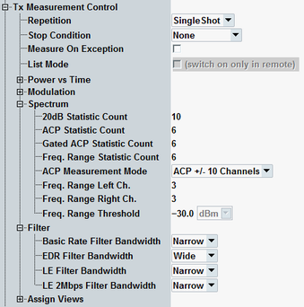

The "Measurement Control" parameters configure the scope of the measurement.
See also: "Statistical Settings"

Defines how often the measurement is repeated if it is not stopped explicitly or by a failed limit check.
- Continuous: The measurement is continued until it is explicitly terminated. The results are periodically updated.
- Single-Shot: The measurement is stopped after one statistics cycle.
Single-shot is preferable if only a single measurement result is required under fixed conditions, which is typical for remote-controlled measurements. Continuous mode is suitable for monitoring the evolution of the measurement results in time and observe how they depend on the measurement configuration, which is typically done in manual control. The reset/preset values therefore differ from each other.
- "None": The measurement is performed according to its "Repetition" mode and "Statistic Count", irrespective of the limit check results.
- "On Limit Failure": The measurement is stopped when one of the limits is exceeded, irrespective of the repetition mode set. If no limit failure occurs, it is performed according to its "Repetition" mode and "Statistic Count". Use this setting for measurements that are intended for checking limits, e.g. production tests.
Specifies whether measurement results that the R&S CMW identifies as faulty or inaccurate are rejected. A faulty result occurs, for example, when an overload is detected. In remote control, the cause of the error is indicated by the "reliability indicator".
- Off: Faulty results are rejected. The measurement is continued. The statistical counters are not reset. Use this mode to ensure that a single faulty result does not affect the entire measurement.
- On: Results are never rejected. Use this mode for development purposes, if you want to analyze the reason for occasional wrong transmissions.
Shows whether the list mode is enabled and disables an enabled list mode. Enabling the list mode is only possible via the remote control command below.
The list mode is essentially a remote control feature; for an introduction see "List Mode".
Option R&S CMW-KM012 is required.
Remote command:Defines the number of measurement intervals per measurement cycle (statistics cycle, single-shot measurement). This value is also relevant for continuous measurements, because the averaging procedures depend on the statistic count.
In the Bluetooth multi-evaluation measurement, the measurement interval is completed when the R&S CMW has measured the complete burst / packet. The RF test specification stipulates a minimum number of packets or - for in-band spurious emissions - a minimum measurement time, to which the statistic count has to be adjusted. See the "Statistical settings" sections in "ACP and Multi-Shot Measurements".
The phase encoding setting is only available in the combined signal path scenario.
See also: "Statistical Results"
- BR or EDR:
– "ACP +/- 10 Channels" means that the R&S CMW measures the center channel (channel 0, defined by the "RF Settings > Frequency/Channel") plus 10 channels at lower and higher frequencies. The ACP bar graph and the table contain the results for 21 channels, labeled –10, –9 ... 0, 1 ... 10. – "ACP 79 Channels" means that the ACP measurement covers all RF channels (channels 0 to 78 centered at 2402 MHz, 2403 MHz, ..., 2480 MHz, respectively). The ACP bar graph and table contain the results for 79 channels, labeled 0, 1 ... 78. - LE:
– "ACP +/- 5 Channels" means that the R&S CMW measures the 21 "half-channels" (1 MHz width) centered at fTX– 10 MHz, fTX– 9 MHz, ..., fTX+ 10 MHz.
This mode is applicable to all types of LE bursts.– "LE All Channels" means that the ACP measurement covers all 1 MHz bands overlapping with the LE channel range. It means 2 MHz channels 0 to 39 centered at 2402 MHz, 2404 MHz, ..., 2480 MHz, respectively. Hence the ACP bar graph and table contain the results for the 81 "half-channels" centered at 2401 MHz, 2402 MHz, ..., 2481 MHz (1 MHz width).
"LE All Channels" mode is only available with test packets using LE uncoded PHY (LE 1M PHY, LE 2M PHY). LE coded PHY and advertiser packets are not supported in "LE All Channels" mode.
According to the Bluetooth RF test specification, for in-band spurious emissions tests, all (overlapping half-) channels have to be measured. The R&S CMW obtains these results in a multi-shot measurement, which provides the necessary bandwidth but increases the measurement time; see "ACP and Multi-Shot Measurements".
Option R&S CMW-KM611 is required for LE 1M PHY (uncoded). For LE 2M PHY and LE coded PHY, option R&S CMW-KM721 is also required.
Specifies the number of 1 MHz channels to be measured below and above the current measured channel. The threshold is the level that needs to be crossed to search the frequencies fL and fH.
For more details, see "Spectrum Frequency Range Results (BR)".
Remote command:Selects the resolution bandwidth of the measurement filter used for power and modulation measurements. For EDR measurements, the filter affects only to the GFSK portion of the burst.
- Narrow band filter: 1.3 MHz
- Wide band filter: Approx. 2.0 MHz
- Narrow band filter: 2.6 MHz
- Wide band filter: 4.0 MHz
Spectrum measurements (20 dB bandwidth and ACP) are performed at smaller measurement bandwidths; see "Basic Rate Measurements", " Enhanced Data Rate Measurements" and "Low Energy Measurements".
Option R&S CMW-KM610 is required for BR or EDR measurements. Option R&S CMW-KM611 is required for LE 1M PHY (uncoded). For LE 2M PHY and LE coded PHY, option R&S CMW-KM721 is also required.
Selects the view types to be displayed in the "Overview" dialog. The R&S CMW does not evaluate the results for disabled views. Therefore, limiting the number of assigned views can speed up the measurement.